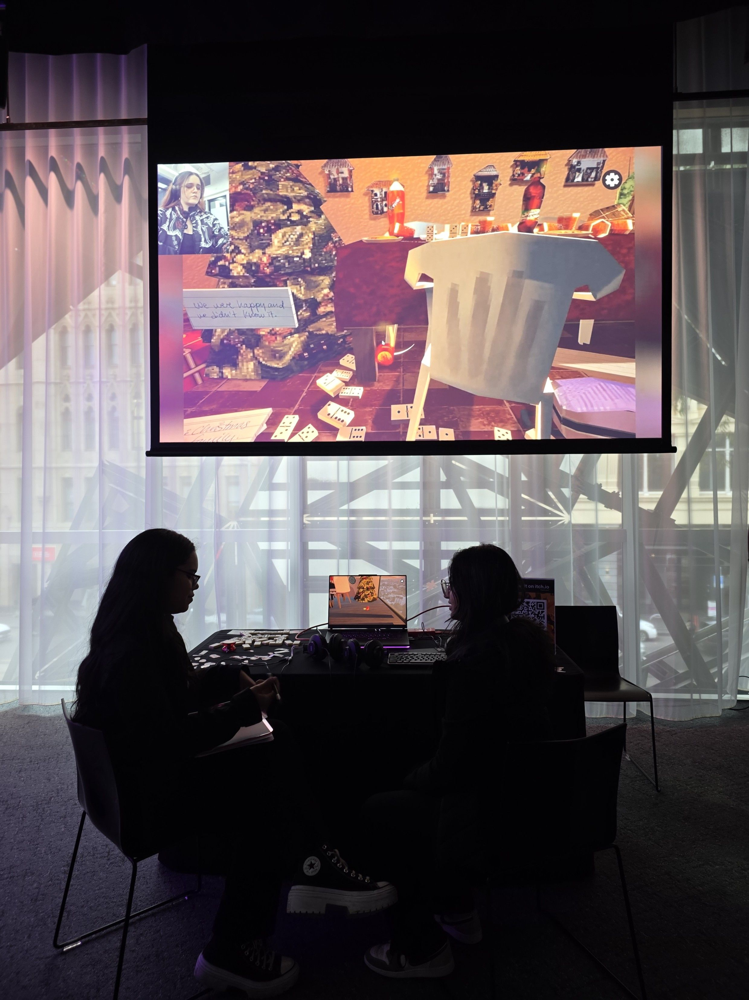

1
Foundation
AGI Studio 1
Animation, Games & Interactivity
Work in your chosen area of practice, responding to self-initiated or client briefs. Conceptualise, develop and produce a range of exploratory works that showcase where your practice sits.
Chosen practice
Exploratory works
Brief-driven

2
Industry
AGI Studio 2
Animation, Games & Interactivity
Experiment in your specialisation within small project teams and real or simulated industry contexts. Local and international perspectives on contemporary digital media practice come into focus.
Team projects
Industry context
Global perspectives

3
Major Project
AGI Studio 3
Animation, Games & Interactivity
Produce major, complex works individually or in teams. Investigate the context of problems — location, social issues, ethics and sustainability — applying future-oriented, global industry practice.
Major works
Ethics & sustainability
Future-oriented